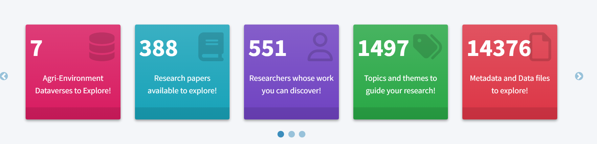
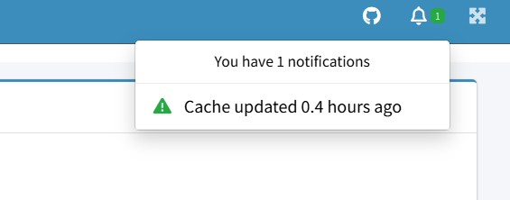

Getting Started
1.0 Background
RED-X is a web-based application built with R Shiny and hosted on shinyapps.io. It is designed to help researchers explore historical research data. RED-X connects to the Borealis Dataverse via Application Programming Interface (API). The retrieved data/information is stored in an embedded relational database to store and retrieve data efficiently. It updates automatically every 48 hours to provide an up-to-date metadata and research data.
2.0 Accessing RED-X
You can access the app directly through the following link: 🔗 Launch RED-X
Note : No installation or login is required. RED-X is optimized for desktop browsers. Mobile functionality is limited.
3.0 System Requirements
- A modern web browser (Chrome, Firefox, Edge).
- Stable internet connection.
- Recommended screen resolution: 1280×720 or higher.
4.0 Overview of the Interface
When you launch RED-X, you’ll land on the Home tab, which provides an at-a-glance overview of the database contents. The layout includes a carousel-style summary displaying summary statistics like:
- Connected dataverses
- Total number of studies
- Number of authors
- Available keywords
- Number of downloadable files

It also introduces users to the two primary interactive tools like:
4.1 Network Explorer
This tab allows you to explore relationships between keywords, authors, departments, and colleges using an interactive network graph. It’s designed to support discovery, literature and data review, and collaboration tracking.

4.2 Data Explorer
This section allows users to browse and filter studies, view their metadata, raw data, summary statistic and visualize data. Filters are available by college, campus and institution.

5.0 Data Refresh Cycle
RED-X connects to the Borealis Dataverse using an API calls. Metadata and datasets are updated every 48 hours to ensure access to the most recent content available from contributing institutions.

6.0 Next Steps
- Read the User Guide for more detailed walkthroughs.
- View the System Architecture to understand the backend and data flow.
- Contact adc@uoguelph.ca for questions or support.
7.0 Want to Contribute?
If you’re interested in the development process or contributing to the project, see the Developer Guide.